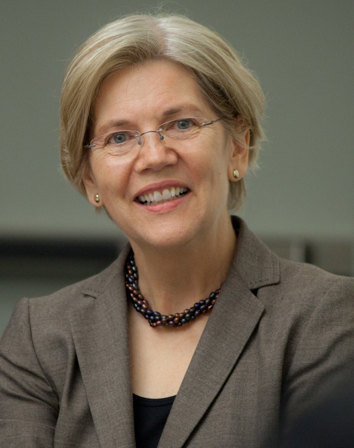
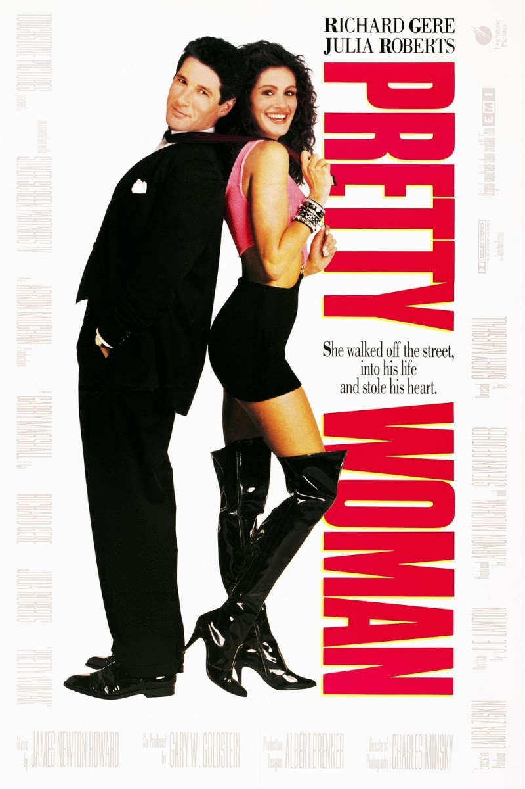
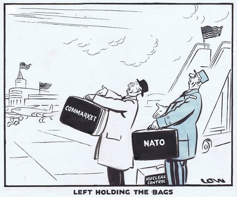
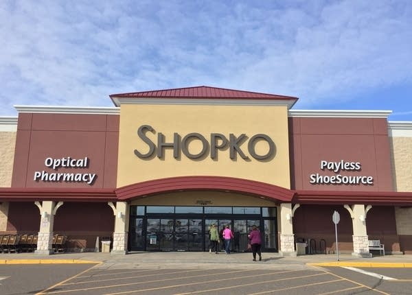
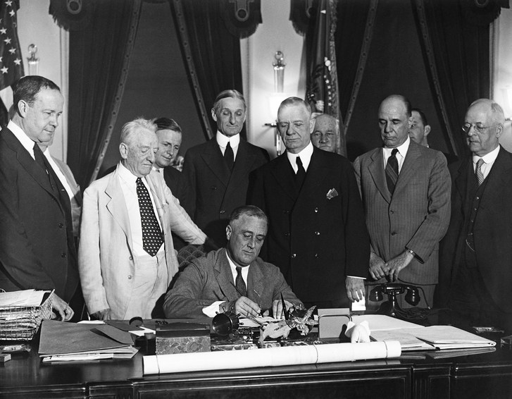

월스트리트가 흡혈귀라고 ? - Pretty Woman과 사모 펀드
게시: 2019-10-17T06:30:31+09:00
** Private Equity Firm을 사모 펀드보다는 '경영참여형 사모펀드 운용회사'라고 번역하는 것이 맞다는 성북천님 지적이 있었는데 저도 그게 맞는 표현이라고 생각합니다. 성북천님의 기타 다른 좋은 댓글 읽어보십시요.
----------------------
현재 미국 민주당의 대통령 후보들 중에서 최근 바이든을 제치고 1위를 달리고 있는 엘리자베스 워런(Elizabeth Warren) 상원의원이 미디엄(Medium)이라는 온라인 매체를 통해 기고한 내용이 있습니다. 제목은 End Wall Street’s Stranglehold On Our Economy, 번역하면 '우리 경제를 목조르고 있는 월스트리트의 부조리를 끝장내자' 정도입니다.

한줄 요약하면 현재의 법률과 규제 하에서는 월스트리트로 상징되는 미국의 비상장 투자사(private equity firms - 사모펀드라기보다는 상장되지 않은 비상장사에 주로 투자하는 투자사를 말하는 듯)는 경제를 살리기 보다는 흡혈귀처럼 다른 기업들과 중산층들의 피를 빨아먹으며 자신의 살을 찌우고 있으니 그를 규제할 법안을 만들자는 것입니다. 월스트리트에서는 당연히 이에 대해 아우성이 터져나왔습니다. 자기들은 미국 경제의 한축을 담당할 뿐만 아니라 아예 지탱하는 중요한 산업인데, 자신들을 흡혈귀에 비유하다니 !
여기서 private equity firm이라는 것이 왜 욕을 먹는지 알려면 그게 어떤 것인지부터 알아야 하는데, 보통 '사모 펀드' 정도로 잘못 번역되는 경우가 있습니다만 그건 오역에 가깝고, 원래 그 뜻이 아니라 '비상장 회사에 투자하는 펀드'가 맞는 해석이라고 합니다. (http://hsalbert.blogspot.com/2018/01/private-equity.html 참조) 그런데 아래 설명(https://www.dummies.com/business/corporate-finance/mergers-and-acquisitions/ma-investors-private-equity-pe-firms/)을 보면 꼭 비상장사에만 투자하는 것은 아닌 것 같고, 그냥 제한된 투자자들로부터 모은 돈으로 기업 인수 및 매각을 해서 돈을 버는 회사를 private equity firm이라고 부르는 것 같습니다. 그런 의미에서, private equity firm은 그냥 사모 펀드라고 불러도 될 것 같아요. 저는 이하 글에서는 그냥 사모 펀드라는 용어를 쓰겠습니다.
<A private equity firm (sometimes known as a private equity fund) is a pool of money looking to invest in or to buy companies. For all intents and purposes, the firm has no operation other than buying and selling companies, which go into its portfolio. PE firms raise money from limited partners (LPs). LPs often include university endowments, pension funds, capital from other companies, and funds of funds (which are simply investments that invest in other funds, not in companies). Wealthy individuals also invest in PE firms. 비상장 투자사는 기업에 투자하거나 인수하는 펀드입니다. 이런 회사는 기업을 사고 파는 것 외에는 다른 하는 일이 없는 것이 원칙입니다. 비상장 투자사는 제한된 파트너(LP)들로부터 자금을 모읍니다. 제한된 파트너에는 종종 대학 기부금 펀드, 연금 펀드, 다른 회사의 자본, 펀드에 투자하는 펀드 등이 포함됩니다. 부유한 개인도 비상장 투자사에 투자합니다.>
저는 이 기사를 읽고 리처드 기어와 줄리아 로버츠가 주연했던 1990년 영화 'Pretty Womon'이 기억났습니다. 거기서 성공한 사업가인 에드워드 루이스가 하던 일이 corporate raider, 즉 기업 인수 사냥꾼으로 흔히 불리던 그런 투자사 운영자였거든요. 대체 기업 인수 사냥꾼 펀드가 무엇이고 왜 경제를 해친다는 것인지는 영화 대사 중 아래 내용을 보시는 것이 더 나을 것 같습니다.

(이 로맨틱 코미디 영화의 원작 시나리오의 제목은 3000 으로서, 결국 신분 상승을 꿈꿨던 콜걸이 처참하게 버려진다는 참혹한 내용이었습니다. 당연히 할리우드에서 통하는 내용이 아니었고 내용을 왕창 고친 뒤에 프리티 우먼으로 거듭 났습니다.)
에드워드 (리처드 기어) : 회사의 자산(assets)을 조각내서 말이지. 비비안 (줄리아 로버츠) : 자산이 뭐에요 ? 에드워드 : 비비안 -- 비비안 : 알려줘요, 내가 언젠가 회사를 사게 될지도 모르쟎아요. 에드워드 : 자산이란 회사가 보유한 금전적 가치가 있는 모든 것을 말해. 어떤 경우엔 회사 전체보다 그 자산 조각들이 더 가치가 있을 수 있거든. 그것들을 팔아치워서 이익을 보는거지. 비비안 : 차를 훔쳐서 부품을 팔아먹는 것과 비슷한 거군요 ? 에드워드 : 꼭... 그런 건 아닌데. (다른 장면에서 에드워드는 인수 대상인 회사 경영자 크로스를 만납니다.) 에드워드 : 크로스씨, 전 제 주식을 팔러 여기 온 게 아닙니다. 반대로 당신 주식을 사러 왔지요. 크로스 : (화가 남) 아주 배짱이 두둑하시군. (You've got a lot of nerve.) 에드워드 : 아뇨. 제게 두둑한 건 돈이지요. (No. What I have is a lot of money.) 크로스 : 미스터 해리스, 난 당신에 대해서 아주 잘 알아. 당신이 기업들을 인수하면 그것들은 주로 사라져 버리는 경향이 있더군. 심지어 연금 펀드까지 탈탈 털린 채 말이야. 당신이 인수한 마지막 회사 3개는 하도 잘게 조각나는 바람에 과부들은 퇴직금 수표조차 받지 못했어. 에드워드 : (냉정함) 제가 그 회사들에게 한 조치는 완벽하게 합법적인 것들이었습니다. 크로스 : 당신이 하는 짓의 합법성 여부를 묻는 게 아니야. 날 구역질 나게 만드는 건 바로 당신의 도덕성이라고. 난 당신 같은 작자에게 내 회사가 강간당하는 거 용납할 수가 없어. 에드워드 : (이제 화남) 그건 당신 회사가 아니에요. 상장 회사(public company)니까요. 그리고 그걸 제가 인수할 겁니다. 다른 주주들에게서 사들이든, 당신에게서 사들이든지요.
아래에는 워런이 실은 기고문의 일부들을 발췌 번역했습니다. --------------- 사모펀드들은 투자자들에게서 자금을 모으고 자신들의 돈도 약간 집어넣은 뒤에, 엄청난 금액의 돈을 빌려서 다른 회사들을 사들입니다. 가끔은 그렇게 인수된 회사들도 잘 운영이 됩니다. 하지만 사모펀드들이 흡혈귀처럼 행동하는 일이 너무 자주 일어납니다. 회사의 피를 쪽쪽 빨아먹고 부자가 된 뒤에 무너진 회사를 내버려두고 나가버리는 것이지요. 워싱턴은 이런 펀드들의 행태를 규제하거나 국가 경제의 이익과 그들이 받는 상여금이 비례하도록 보장하는 것에 대해 해놓은 일이 거의 없습니다. 그 결과로 그들은 그들이 인수하는 회사가 망하더라도 그들은 부자가 되도록 온갖 형태의 장난질을 칠 수 있게 되었습니다. 그들은 회사를 인수하고 나면 회사를 사느라 진 빚을 갚을 의무를 그들이 방금 산 회사에게 떠넘깁니다. 그들이 회사를 조종할 수 있기 때문에, 고액의 '경영' 및 '컨설팅' 수수료, 푸짐한 배당금, 단기 이익을 노린 부동산 매각 등의 행태를 통해 회삿돈을 자기들에게 빼냅니다. 그리고 그들은 비용을 후려치고 근로자를 해고하고 장기 투자를 취소시켜 돈을 마련한 뒤 또 자신들에게 넘깁니다. 이런 수작으로 인해 회사가 마침내 무너지게 되면 그 근로자들과 영세 하청업체들(small business suppliers), 회사채 소유자들, 그리고 그 지역사회는 모든 책임을 뒤집어 쓴 채 내버려집니다. (...are left holding the bag) 하지만 사모펀드 경영진들은 부자가 된 채로 유유히 걸어나가서 다음 희생자를 찾아나섭니다.

('be left holding the bag'이란 온당치 못하게 책임만 뒤집어 쓴 채 버려지는 것을 뜻하는 표현입니다.) (...중략...) 1961년 창업한 할인 소매 체인점인 샵코(Shopko)의 경우를 보십시요. 2005년 말까지 샵코는 350개의 점포를 가지고 있었습니다. 그러다가 사모펀드인 선캐피탈(Sun Capital)이 인수를 하더니 샵코에 10억 달러 이상의 빚을 지웠습니다. 선캐피탈은 곧 샵코에게 가장 중요한 자산 - 그 점포 부동산 - 을 팔고, 그 팔아버린 점포를 다시 리스하도록 강요했습니다. 선캐피탈은 그 돈으로 샵코가 선캐피탈에게 배당금 5천만불과 분기당 컨설팅 비용 1백만불을 지급하도록 했습니다. 거기에다 어떤 거래에 대해서는 추가로 1%의 컨설팅 비용을 내게 했는데, 그 때문에 샵코는 5천만불의 배당금 지급에 대해 선캐피탈에게 추가로 50만불의 비용을 지급해야 했습니다. 마침내 샵코가 무너져서 파산 신청을 했을 때, 수백 명의 근로자들이 일자리를 잃었고 근로 기간 중 쌓아놓은 정당한 퇴지금금조차 받지 못했습니다. 하지만 선캐피탈은 두둑한 이익을 챙기고 유유히 걸어나왔습니다.

(ShopKo는 미국에 흔히 있는 그런 할인 매장인 모양이군요. 월마트 외에도 미국에는 각 지방마다 그런 소매 체인점이 있더라고요. 텍사스에는 HEB이라는 체인점이 꽉 잡고 있던데, HEB는 Here Everyting is Better의 약자라고 하더군요. 좀 촌티나지요 ? 참고로 ShopKo도 상장된 주식회사가 아니라 비상장사였습니다.) (...중략... 그래서 어쩌자는 것이냐에 대한 워런의 제시안입니다.) 불필요한 투기를 막기 위한 상여금 제도의 개혁 (Reforming Incentives to Stop Useless Speculation) 1. 먼저 우리는 제가 발의했던 21세기형 글래스-스티걸 법안(21st Century Glass-Steagall Act)을 통과시켜야 합니다. 이는 상업은행(commercial banks, 우X은행 국X은행과 같은 우리나라의 시중은행)과 투자은행(JP Morgan, Goldman Sachs 등과 같이 기업 금융을 주로 하는 은행)이나 간의 벽을 다시 쌓는 법안입니다. 사람들이 안심하고 은행에 예금을 할 수 있도록 소매은행에는 저렴한 예금 보험이 제공되는데, 이는 사실상 납세자들의 부담으로 시중은행에 보조금을 주고 있는 것입니다. 하지만 투자은행이 시중은행을 합병할 수 있도록 허락하면서 1999년의 글래스-스티걸 법안 철회로 그 보조금과 안전망이 더 위험한 투자은행 활동까지 넘어가게 되었습니다. 이로 인해 과도한 위험을 동반한 투기가 장려되었습니다. 만약 투기가 잘 안되면 납세자들의 돈으로 그 손실을 메꾸게 된다는 것을 투자은행들은 잘 알거든요. 이는 납세자들과 경제에 위험한 일입니다. 은행들이 납세자가 부담해서 보조해주는 보험 혜택을 입는다면, 그들의 수익활동은 단조로운 은행 본연의 업무로 제한되어야 합니다. 만약 은행들이 고위험 투자 은행 업무를 하고 싶다면, 그 투자 결정에 따르는 장기 위험을 그들 스스로 떠안게 만들어야 합니다. 21세기형 글래스-스티걸 법안은 그 목적을 달성할 것이고, 금융 산업의 상여금이 나머지 전체 경제의 장기적 이익에 비례하도록 해줄 것입니다.

(1933년 6월 16일, 루스벨트 대통령이 글래스-시티걸 은행 개혁 법안에 서명하는 장면입니다. 이 법안의 주내용은 시중은행과 투자은행을 분리하도록 하는 것이었습니다. 쉽게 말해서, 만약 우X은행이나 국X은행 같은 시중은행에서 예금자들의 정기예금을 이용해서 더 높은 수익을 추구한답시고 무슨 바이오니 무슨 코인이니 하는 것들을 잔뜩 샀다가 거품이 꺼져서 은행이 망하면 서민 예금자들까지 큰 손해를 보게 되므로, 그런 손실을 국가가 나랏돈을 써서 구제해줍니다. 결국 은행가들이 도박을 해서 이익이 나면 지들이 보너스로 가져가고, 손해가 나면 국민들이 그 손실을 세금으로 메워주는 셈이지요. 이걸 이익의 사익화, 손실의 사회화라고 합니다. 그걸 막는 것이 시중은행과 투자은행의 분리입니다.
이 법안에 대해서 금융계는 금융산업의 발전을 막는다고 지속적으로 불평을 해왔고, 결국 1999년 Gramm-Leach-Bliley 법안이 만들어지면서 폐지되었습니다. 그렇게 글래스-스티걸 법안이 폐지된지 10년도 안되어 리먼 사태가 일어난 것은 결코 우연이 아닙니다.)
2. 우리는 불필요한 투기를 억제하고 생산적인 투자를 장려하는 새로운 엄격한 은행 경영진 보상 규칙을 부과해야 합니다. 만약 은행가가 큰 베팅을 해서 단기적으로 돈을 번다면, 연말에 엄청난 보너스를 챙길 수 있습니다. 하지만 큰 베팅을 했다가 잃는다면 - 그게 당장의 손실로 이어지든 것이든 장기적으로 손실이 나는 것이든 - 그가 소속된 회사가 손해를 볼 뿐 은행가 자신은 아무런 손해를 보지 않습니다. 이 좋은 부분만 있고 나쁜 부분은 없는 보상안이 바로 2008년의 금융 위기를 몰고온 과도한 위험 부담(risk-taking)의 주요 원동력이었습니다. 거의 10년 전, 의회는 대형 금융사들의 잘못된 상여금 제도를 수정하는 새로운 규칙을 부과하도록 연방 규제위원들(아마도 여기서 regulator라는 것은 연방준비위원회의 위원들을 뜻하는 듯:역주)에게 지시했습니다. 하지만 규칙을 구현하는 것은 고사하고 규제위원들은 아직 그런 주요 규칙들을 확정짓지도 못하고 있습니다. 그렇게 확정되지 못하고 있는 규칙 중에는 은행가들의 베팅이 장기적으로는 손해를 일으킬 경우 은행가들이 받아간 상여금을 뱉어내도록 하는 것도 포함되어 있습니다. 대통령이 될 경우, 저는 실제로 일을 해서 이런 규칙을 확정지을 규제위원들을 임명할 것입니다. 3. 우리는 트럼프 시대에 들어서 약해진 규칙들, 즉 자본과 유동성과 부채 활용, 대형 은행의 구조 조정(resolution-planning)에 대한 규칙들을 다시 강화해야 합니다. 트럼프가 임명한 규제위원들은 대형 은행에 대한 규제를 조금씩 깎아내며 그런 것들이 경제 성장의 잠재력을 제한한다고 주장했지만, 실상은 그에 저항할 만큼 그런 기술적 규칙에 대해 이해하는 사람이 없기를 바랐을 뿐입니다. 글쎄요, 저는 그런 규칙들을 잘 이해합니다. 저는 그런 규칙들이 금융 체계를 더 안전하게 만들어 줄 뿐만 아니라 대형 은행들의 활동이 더 경제적으로 생산적인 목적으로 흐르도록 해준다는 것을 알고 있습니다. 대통령이 될 경우, 저는 그런 규칙들을 원복시키고 월스트리트의 고삐를 당겨서 더 넓은 경제적 목적에 부합하는 활동을 할 기회를 찾도록 해줄 규제위원들을 임명하겠습니다. ------------- 이 외에도 여러가지 흥미진진한 사례와 주장이 담긴 워런 상원의원의 주장은 여기서 https://medium.com/@teamwarren/end-wall-streets-stranglehold-on-our-economy-70cf038bac76 보실 수 있습니다.
Source : https://medium.com/@teamwarren/end-wall-streets-stranglehold-on-our-economy-70cf038bac76 https://www.barrons.com/articles/elizabeth-warren-targets-vampires-in-attack-on-private-equity-industry-51563471456?mod=mw_quote_news https://en.wikipedia.org/wiki/Elizabeth_Warren https://sfy.ru/?script=pretty_woman https://en.wikipedia.org/wiki/Pretty_Woman